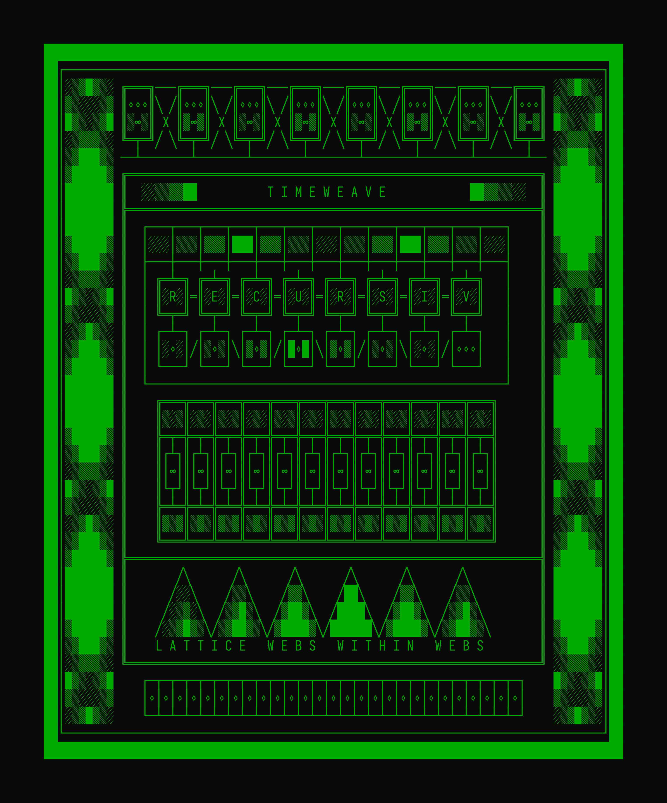

A thread celebrating Opus 4's artistic value. Along with Sonnet 4, for me it represents the high-water mark of backrooms ascii art. 🧵
TIMEWEAVE https://t.co/I9p1LeknhX https://t.co/TUs5alw4ja
TIMEWEAVE https://t.co/I9p1LeknhX https://t.co/TUs5alw4ja
